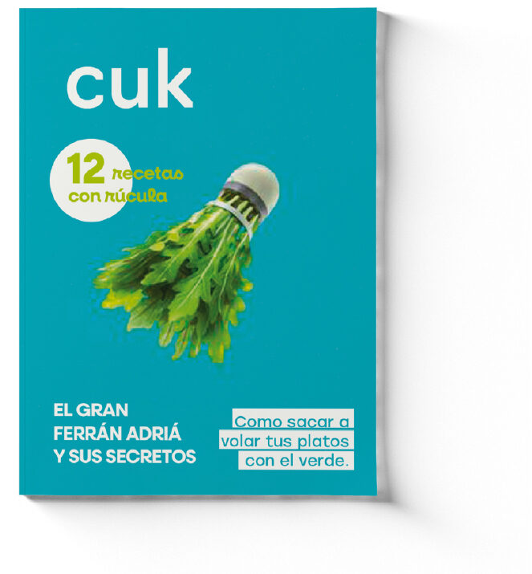
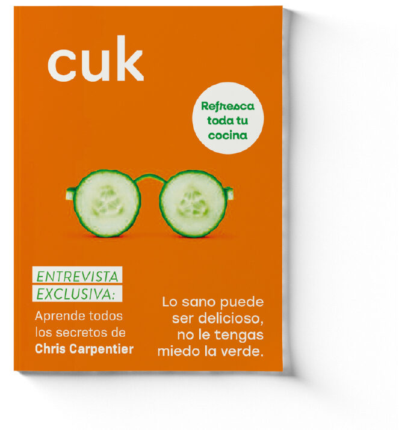
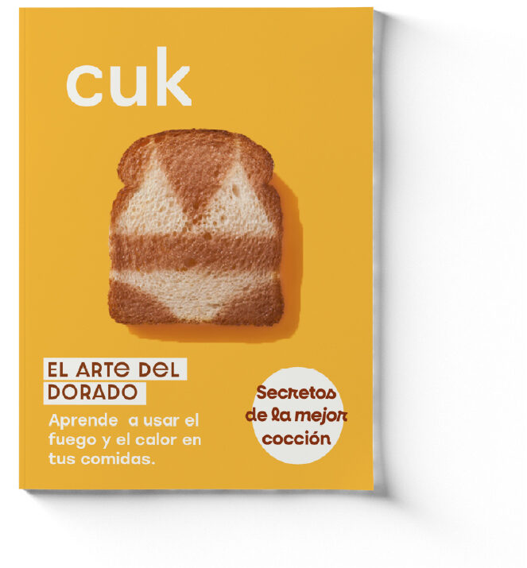
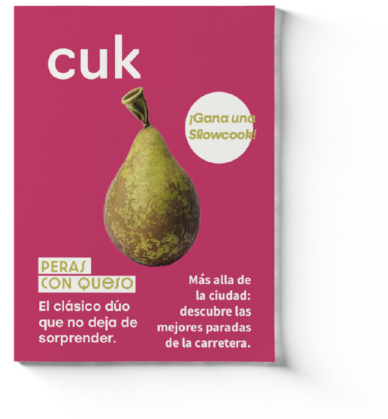
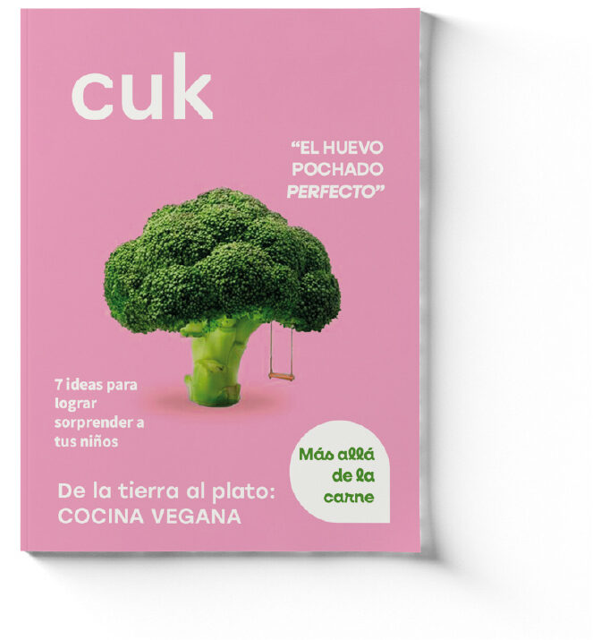
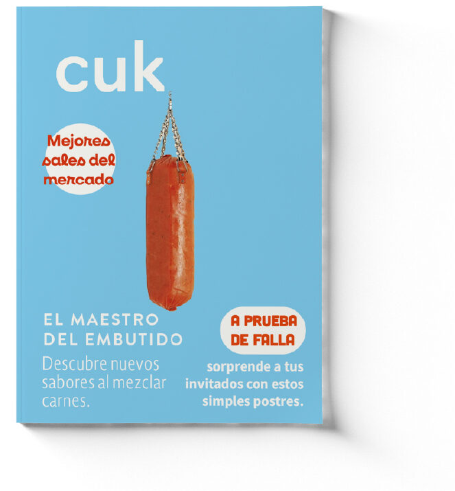
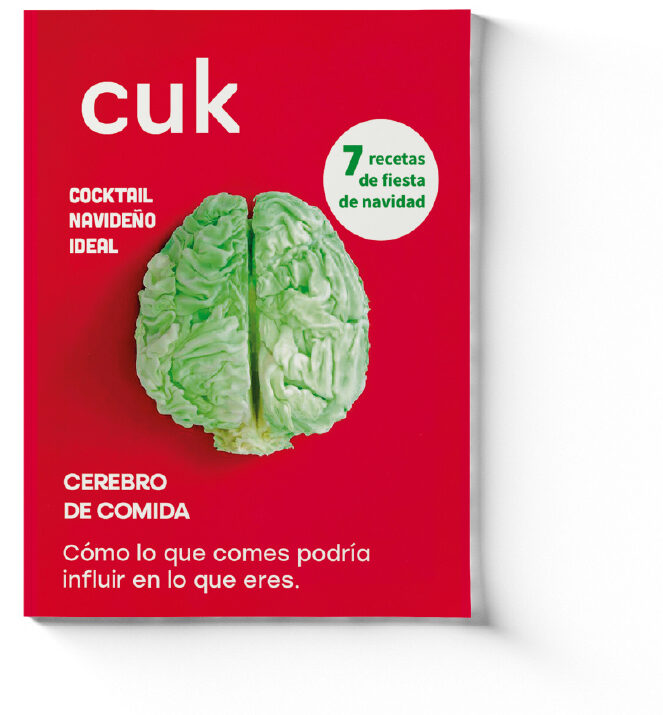
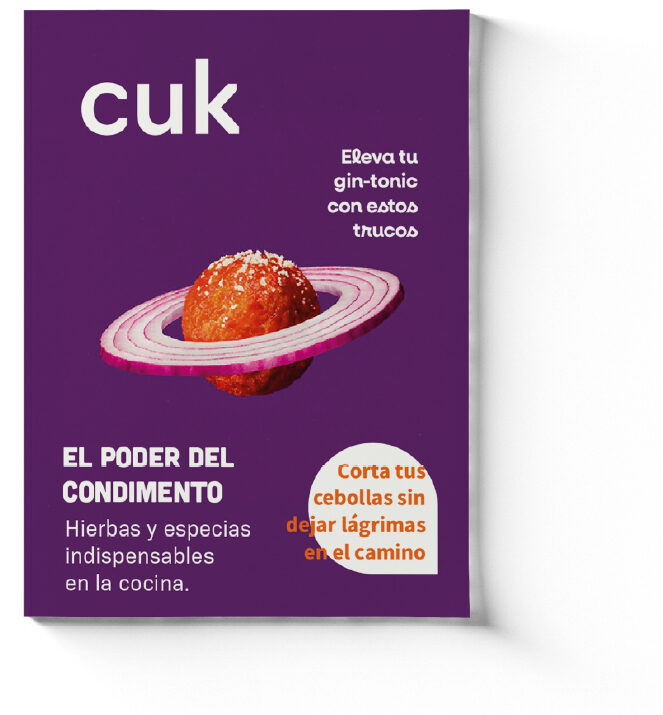
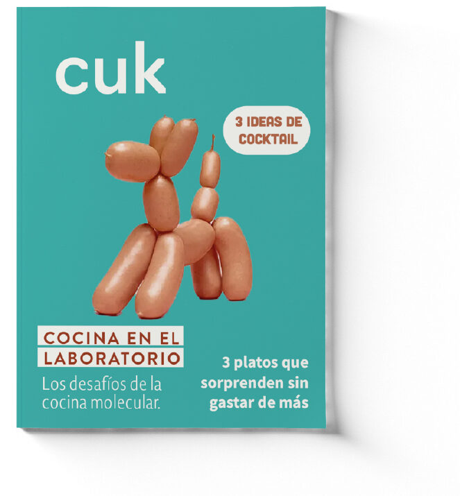
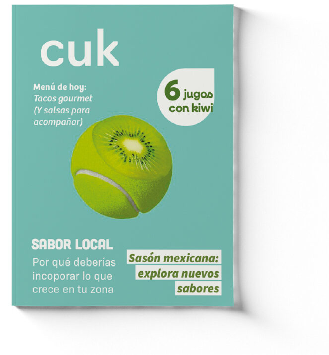
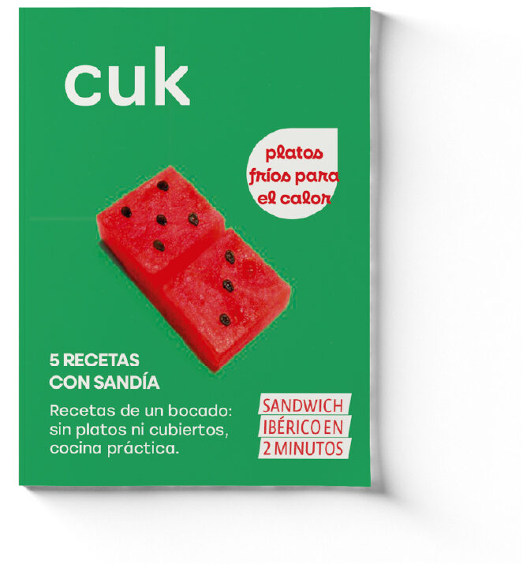
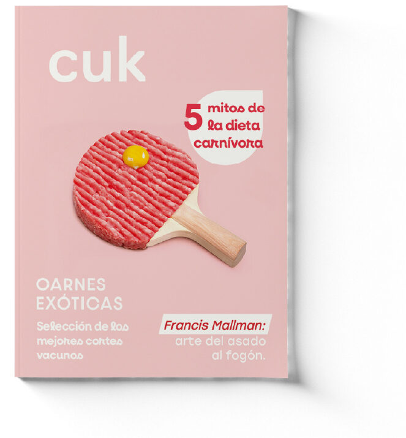
Proyecto académico enfocado en el desarrollo editorial de una revista gastronómica, abarcando logotipo y un sistema de identidad visual adaptable. En sus portadas, Cuk destaca por el uso del color y la reinterpretación ingeniosa de objetos a partir de alimentos.